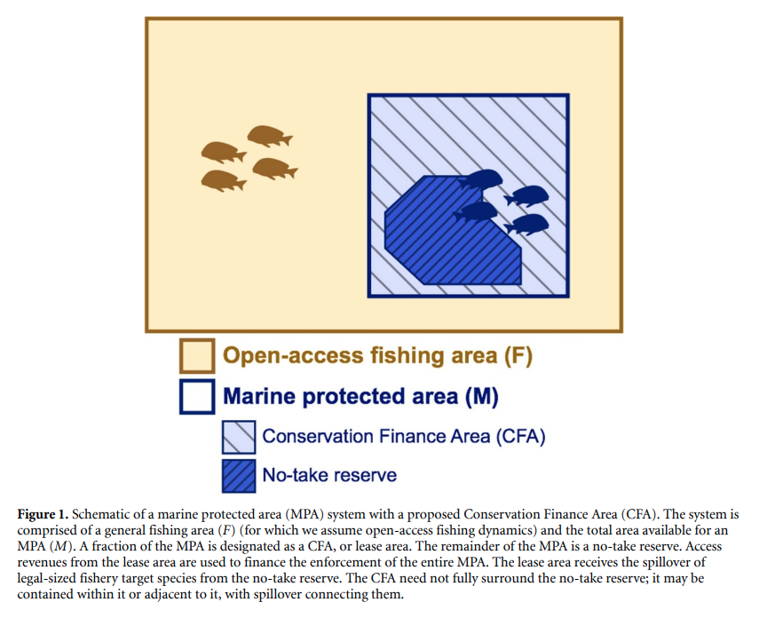
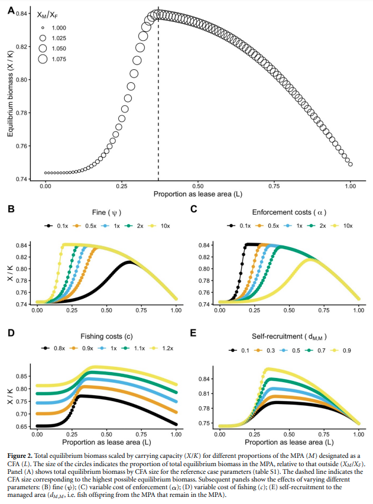

In a new paper just published in Environmental Research Letters, myself and coauthors Juan Carlos Villaseñor-Derbez, Darcy Bradley, Matthew Burgess, Hunter Lenihan, and Christopher Costello propose a new institution to finance enforcement of marine protected areas. Our paper entitled “Self-financed marine protected areas” shows how this new institution—a ‘conservation finance area’ (CFA)—can help to remedy poaching in a MPA by allowing limited fishing leases and using the lease money to finance enforcement of the MPA.

Using a bioeconomic model we show that CFAs can fully finance MPA enforcement, deter illegal fishing, and ultimately maximize fish biomass. Moreover, we show that unless a large, exogenous, and perpetual enforcement budget is available, implementing a CFA in a no-take MPA always results in high biomass than without.

We conclude by exploring the real-world enabling conditions that would support such an institution, and highlight some real-world systems that share many features with CFAs to suggest that our proposed institution is a viable policy solution.
The following articles provide coverage of our paper: